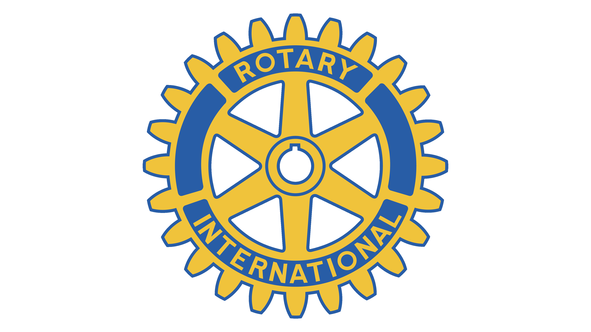
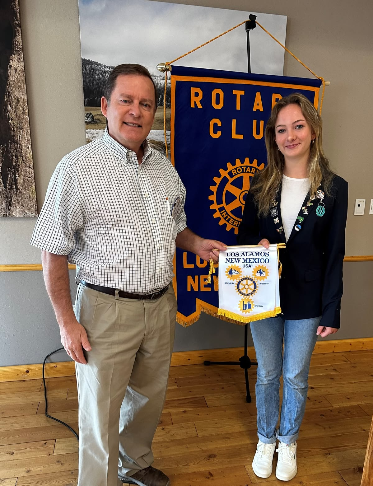

The Rotary Club is a global network of community volunteers, business leaders, and professional peers.Members work together to tackle pressing local and global challenges. The club brings people from diverse backgrounds together to exchange ideas.
Rotary clubs offer hands-on community service projects, youth leadership development programs, and global humanitarian initiatives and facilitated by Mr. R. Pech
